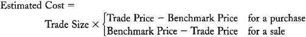
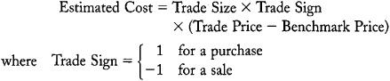
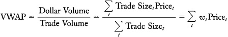
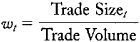
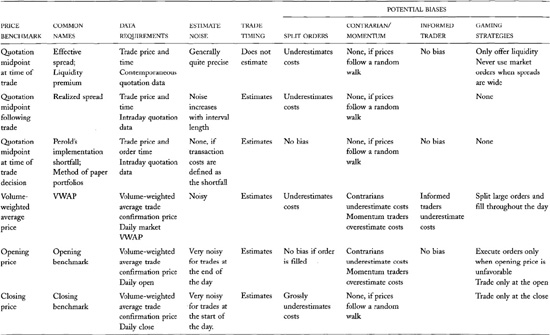
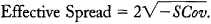

Chapter 21: Liquidity and Transaction Cost measurement
Traders pay attention to their transaction costs because transaction costs make implementation of their trading strategies expensive. Transaction costs are most important to traders who trade frequently or who trade large sizes. For most active traders, transaction costs are the most significant determinants of their total returns. Speculators who perform poorly usually do so because their transaction costs exceed the values of their trading strategies.
Traders measure their transaction costs to evaluate how well they and their brokers have implemented their trading strategies. Traders must evaluate implementation in order to manage it effectively. They must know whether they have been trading too aggressively---or not aggressively enough---to optimize their order submission strategies. They also must know how well their brokers work on their behalf to decide which brokers should receive their orders in the future.
Traders also estimate future transaction costs to predict the costs of implementing various trading strategies. Clever strategies may not be profitable if the costs of implementing them are too great. Transaction cost prediction especially concerns large traders in illiquid markets. Their strategies may be profitable if implemented in small size, but the price impacts of implementing them in large size may cause them to lose on net.
Transaction cost measurement also interests exchanges, brokers, regulators, and investment sponsors for the following reasons:
• Exchanges conduct transaction cost measurement studies to document the quality of their markets. They use the results in their marketing efforts. They may also use them to evaluate their brokers, dealers, and specialists.
• Brokers conduct transaction cost measurement studies to document their performance. They use the results to identify their shortcomings, to market their firm's services, and to confirm that they obtain best execution for their clients. The last purpose is especially important when dealers pay brokers to route orders to them. Government regulations, exchange regulations, and common law require that brokers ensure that payments for order flow arrangements do not hurt their clients. Brokers therefore must regularly and rigorously examine execution quality to ensure the most beneficial terms for their customers' orders.
• Investment sponsors must ensure that they obtain value for the commissions that their investment managers spend on their behalf. The U.S. Department of Labor requires that pension funds covered by the Employee Retirement Income Security Act (ERISA) recognize that trading commissions are fund assets that they must conserve. Fund trustees therefore conduct transaction cost measurement studies to determine whether their funds obtain appropriate value for their commissions.
• Regulators often try to promote policies that lower transaction costs. Regulators therefore conduct transaction cost measurement studies to characterize the performance of various market structures. The U.S. Securities and Exchange Commission now requires that all market centers---exchanges, ECNs, and dealers---collect and publish highly disaggregated data that traders can use to evaluate average execution quality for various order types and sizes.
We consider how to measure liquidity in this chapter. We will examine both retrospective and prospective measures of transaction costs. We consider first retrospective measures of transaction costs. We then consider how traders use information about past transaction costs to predict future transaction costs.
21.1 TRANSACTION COST COMPONENTS
Defining and measuring exactly what we mean by the term "transaction costs" is difficult. This entire book is about understanding what transaction costs are, where they come from, and how to measure them. We explore these questions in detail throughout this book.
For our present purpose, transaction costs include all costs associated with trading. These costs include explicit costs, implicit costs, and missed trade opportunity costs.
Explicit transaction costs are all costs that a cost accountant would easily identify. These costs include commissions paid to brokers, fees paid to exchanges, and taxes paid to government. Explicit transaction costs also include any resources that traders devote to the trading process. For example, the costs of setting up, staffing, and running a buy-side trading desk are explicit costs of trading.
Implicit transaction costs are the costs of trading that arise because traders generally have an impact upon prices. For example, traders who buy at asking prices and sell at bid prices pay the bid/ask spread when trading. The spread is an obvious and important cost of trading. Likewise, when large buyers push prices up and large sellers push prices down, the price impacts of their trading are transaction costs.
Missed trade opportunity costs arise when traders fail to fill their orders or fail to fill their orders in a timely manner. Suppose that a speculator wants to buy 100 cotton futures contracts at the New York Board of Trade when the price is 65 cents per pound. In an effort to obtain a good price, the trader submits a buy limit order with a limit price of 64.95 cents. The price of cotton subsequently rises to 68 cents, and the order does not execute. Had the trader traded more aggressively and filled the order at an average price of 65.25 cents, he would have made 2.75 cents per pound, or 1,375 dollars for each 50,000-pound contract. Because the trader failed to trade aggressively, he lost the opportunity to make 137,500 dollars. Traders need to keep track of their opportunity costs so that they can determine whether they are trading aggressively enough.
Explicit transaction costs are the most easily measured of the three types of transaction costs. Measuring them is a simple cost accounting exercise in which the analyst identifies and sums all commissions, fees, and explicit expenses associated with trade process.
The Flip Side
Transaction costs concern everyone in the trading industry. Sell-side institutions---brokers, dealers, and exchanges---try to sell low-cost transaction services. Buy-side institutions try to obtain transaction services at low cost. To a casual observer, it would appear that everyone wants low transaction costs.
Not so. Transaction costs to the buy side are revenues to the sell side. Sell-side institutions would like their revenues to be as high as possible. They market low-cost transaction services only because they compete with each other for buy-side business.
These comments suggest that sell-side institutions benefit from high transaction costs. While this might be true in the short run, it has not been true in the long run. Decreases in transaction costs have caused buy-side traders to greatly increase the volume of their trading. The increased volume, coupled with substantial decreases in the costs of providing transaction services, have increased sell-side profits even as buy-side transaction costs have fallen.
Implicit transaction costs and missed trade opportunity costs are harder to measure because they require some benchmark against which to compare trade and no-trade prices. To measure the price impact of a completed trade, analysts must estimate what prices would have been if the trade had not taken place. To measure the opportunity cost of an uncompleted trade, analysts must estimate the average prices at which the trade would have taken place if it had been completed. These estimation problems make transaction cost measurement a difficult and imprecise science.
21.2 IMPLICIT TRANSACTION COST ESTIMATION METHODS
Traders estimate implicit transaction costs by using specified price benchmark methods and econometric transaction cost estimation methods. The price benchmark methods are the most commonly used. They are easier to implement than the econometric methods and generally more useful when traders need to evaluate transaction costs for specific trades. The econometric methods are most useful for estimating average transaction costs for a whole market.
Most traders measure transaction costs relative to specific price benchmarks. The price benchmark provides a basis for determining whether buyers paid, and sellers received, good or bad prices.
When traders use a specified price benchmark, they estimate the per unit transaction cost as the difference between the trade price and the benchmark price. For a purchase, the estimated cost is the excess of the trade price over the benchmark price. For a sale, it is the opposite. They then multiply this difference by the trade size to obtain the estimated transaction cost:

Estimated transaction costs thus are high when buyers pay high prices and when sellers receive low prices.
Note that the estimated transaction costs for all buyers and sellers in a trade sum exactly to zero. Transaction cost to one side is trading profit to the other side. Traders who demand liquidity tend to pay transaction costs and those who offer liquidity have negative transaction costs.
For convenience, the difference between the trade price and the benchmark price is often called the signed difference, where the sign of the difference is understood to be 1 if the trade is a purchase and − 1 if the trade is a sale:

An ideal price benchmark would be the price that would have prevailed if the trader had not tried to trade. The difference between this price and the trade price would be entirely due to the trade, and therefore a good estimate of the implicit cost of trading. Unfortunately, no one can confidently specify such a price. Instead, traders commonly use a volume-weighted average price; the opening price; the closing price; an average of the open, high, low, and closing prices; or an average of bid and ask prices near the time of the trade. We discuss the virtues and drawbacks of each of these benchmarks in the next section.
Econometric transaction cost estimation methods use statistical methods to estimate transaction costs. The simplest econometric methods extract information about transaction costs from price reversals that traders cause when they have an impact on price. More complex econometric models extract information about transaction costs from the relation between executed orders and price changes. We can interpret both types of methods as benchmark methods in which the analyst estimates the benchmark instead of specifying it.
Money Flow
Technical traders use a version of this trade identification procedure when computing money flow indicators. Money flow is volumes on upticks minus volumes on downticks. Technical traders believe that money flow indicates whether aggressive traders are net buyers or sellers.
21.2.1 Trade Side Identification
Traders who conduct transaction cost measurement studies usually have a set of trades in which they participated for which they want to measure their transaction costs. They therefore know whether they were the buyer or the seller for each trade.
Analysts sometimes want to estimate transaction costs for trades in which they did not participate. Since all trades have at least one buyer and one seller, such analysts must identify the side of the trade in which they are interested. (Ignoring commissions, the sum of the costs on both sides is always zero.) They typically direct their interest exclusively to the side that appears to be taking liquidity.
Passive-Aggressive Behavior in the Markets
Analysts generally classify traders who offer standing limit orders as passive traders. They wait for the market to come to them. However, they also may be very aggressive traders. For example, a buyer can peg the market at his bid as long as he can afford to buy at that price. Although such traders may very aggressively accumulate or divest positions, the Lee and Ready algorithm will classify them as passive traders.
Analysts typically identify that side by the relation between the trade price and the bid and asking prices. If the trade price is closer to the bid, they assume that the buyer was the aggressive trader. If it is closer to the asking price, they assume the seller was the aggressive trader. If the trade price was exactly in the middle between the bid and the ask, they look to the last price change. If the trade took place on an uptick or a zero uptick, they identify the trade as initiated by an aggressive buyer. Otherwise, they identify it as seller-initiated. This procedure is commonly known at the Lee and Ready algorithm after the two academic researchers who popularized it.
Analysts who use the Lee and Ready algorithm to measure transaction costs must recognize its two major shortcomings. First, it causes analysts to estimate higher transaction costs than most traders incur because most traders do not exclusively demand liquidity. Second, it cannot identify when an order has been filled with multiple trades. If the trades are at different prices because the order had market impact, the cost of filling the order will be underestimated. We discuss this problem further below.
21.3 MEASURING TRANSACTION COSTS WITH SPECIFIED PRICE BENCHMARKS
In this section, we introduce and discuss methods for measuring implicit transaction costs by using various specified benchmarks. Our presentation starts with a description of the various benchmarks. Then we consider the properties of the resulting estimators.
21.3.1 Benchmark Prices
Many traders estimate the cost of trading by the signed difference between the trade price and a quotation midpoint. The quotation midpoint is the average of the bid and ask prices in a quotation.
Traders obtain different transaction cost estimates according to which quotation midpoint they use. The quotation midpoint that prevailed at the time of the trade produces a transaction cost estimate that analysts call the effective spread (or sometimes the liquidity premium).
Post-trade quotation midpoints produce realized spreads. Analysts most commonly compute realized spreads using quotation midpoints obtained 5, 10, 15, or 60 minutes after the trade.
Analysts also use pre-trade quotation midpoints. The most common transaction cost estimator based on a pre-trade quotation midpoint uses the quotation midpoint at the time the portfolio manager decided to trade. Analysts usually call this method Perold's implementation shortfall (after André Perold, who popularized it in an influential 1988 Journal of Portfolio Management article). Jack Treynor, writing seven years earlier, called it the method of paper portfolios.
Traders also estimate their transaction costs by using various dailyprices. The most common daily benchmark is the volume-weighted average price (VWAP). The VWAP is the average trade price of the day where each trade price is weighted by the size of the associated trade. Traders like the VWAP benchmark because they would like to trade at least as well as the average trader on that day. The VWAP is computed most easily by dividing the total dollar value of all trades by the total trading volume:
Consultant Benchmarks
Several investment consultants compute transaction cost estimates for their clients. The consultants generally use different price benchmarks.
Abel/Noser first popularized VWAP transaction cost estimates. Able/Noser is a U.S. discount institutional stockbroker. The firm started to measure transaction costs to show its clients that it could obtain good execution prices for discounted commissions.
SEI popularized transaction cost estimates based on closing price benchmarks. SEI provides investment consulting, investment software, and mutual fund management.
The Plexus Group computes implementation shortfall transaction cost analyses. Its clientele consists primarily of investment sponsors and investment managers who want to optimize their trade implementation or who need to demonstrate that they are not wasting their commissions. The Plexus Group primarily provides transaction cost analyses and trade process consulting.
The Transaction Auditing Group (TAG) computes effective spread (liquidity premium) analyses, among many other transaction audit functions. Their clientele consists primarily of broker-dealers who need to demonstrate to regulators and clients that they are obtaining best execution for their clients.
The Elkins/McSherry division of State Street computes transaction cost estimates primarily by using an average of the daily opening, high, low, and closing prices as the benchmark price. Their clients consist mostly of pension funds and investment managers who are interested in transaction cost comparisons across the 42 countries in the Elkins/McSherry universe.
For more information, browse:

where weight

Traders also use the daily opening price, the daily closing price, or the average of the daily open, high, low, and closing prices as benchmark prices.21.3.1.1 Effective Spreads
The signed difference between the trade price and the time-of-trade quotation midpoint is an intuitively simple transaction cost estimate. This method exactly measures the implicit cost of trading a round-trip when the quotation midpoint does not change. For example, if a trader buys at the ask and then sells the same quantity at the bid, the trader will have done nothing but trade. His per unit loss for the two-trade round-trip is the bid/ask spread. The cost of trading per trade therefore is half of the bid/ask spread. The quotation midpoint benchmark gives us this result: The cost of the purchase is the ask minus the quotation midpoint, or half of the spread. Likewise, the cost of the sale is the quotation midpoint minus the bid, which is also half of the spread.
The liquidity premium is the signed difference between trade price and the time-of-trade quotation midpoint. The effective spread is twice the liquidity premium. The effective spread equals the quoted bid/ask spread when all purchases take place at the bid and all sales take place at the offer. When trades take place within the spread because dealers or brokers arrange price improvement, the effective spread that traders pay is smaller than the quoted spread. Likewise, when large orders fill at prices outside the bid/ask spread, the effective spread is greater than the quoted spread.
The effective spread is the transaction cost estimation method that retail market order traders most commonly use. Retail traders primarily compare their trade prices against the bid and offer prices that prevailed when they submitted their orders. Most such traders are unaware that they engage in transaction cost analyses. They simply want to check whether they are receiving good prices.
21.3.1.2 Realized Spreads
The realized spread is twice the signed difference between the trade price and the quotation midpoint observed at some specified time following the trade. Realized and effective spreads are equal when the quotation midpoint does not change over the measurement interval. Prices often change, however, when traders raise prices in response to aggressive buyers or lower prices in response to aggressive sellers. Realized spreads therefore tend to be smaller than effective spreads.
Realized spreads interest dealers because their profits depend on the prices at which they establish their positions and the prices at which they subsequently liquidate their positions. The spreads that dealers actually realize are less than their quoted spreads because they often provide price improvement and because they sometimes trade with informed traders. The difference between quoted spreads and effective spreads measures the price improvement that dealers provide. The difference between effective spreads and realized spreads measures dealers' losses to well-informed traders.
21.3.1.3 Implementation Shortfalls
We can interpret implementation shortfalls as the difference in values between an actual portfolio and a corresponding paper portfolio. A paper portfolio is an imaginary portfolio that people construct on paper to see what would have happened if they had actually traded. People analyze paper portfolios for fun, to test new trading ideas, and to measure transaction costs.
To measure transaction costs, traders must specify a benchmark price at which they buy or sell instruments for their paper portfolios. The quotation midpoint at the time they decide to trade produces an easy-to-interpret measure of transaction cost. The midpoint quotation price represents a naive best estimate of instrument value at the time they decide to trade. The difference in value between their actual portfolio and the corresponding paper portfolio measures the costs of implementing their trading decisions relative to this benchmark. Since implementation generally is costly, paper portfolios typically are more valuable than the corresponding actual portfolios.
Analysts break the total implementation shortfall into components. The breakdown depends on whether the order was filled. If a trade occurred, the shortfall is the total trade size times the signed difference between the average trade price and the quotation midpoint at the decision time. If the trade did not take place, or if the order was not completely filled, the shortfall is the unfilled size multiplied by the difference between the current price and the benchmark price. The first component estimates the transaction cost of completed trades. The second component estimates the missed trade opportunity cost.
When they are constructing paper portfolios to evaluate new trading ideas, traders make assumptions about transaction costs that are often critical. If they assume costs that are too low, they may adopt unprofitable trading strategies. If they assume costs that are too high, they may reject otherwise profitable trading strategies. Traders typically assume that they pay the quotation midpoint plus some premium when buying. They likewise assume that they receive the quotation midpoint less some discount when selling. They obtain the premiums and discounts that they use for these analyses from transaction cost studies.
21.3.1.4 VWAP, Opening Prices, and Closing Prices
Many investment sponsors do not know when during the day that the trades made on their behalf by their investment managers took place. Unless they make special arrangements with their brokers and with their investment managers, they typically receive only daily reports of the share-weighted average prices of the trades they made that day. These investment sponsors therefore can conduct transaction cost analyses only with daily price benchmarks.
The daily market volume-weighted average price is an attractive transaction cost benchmark to such investment sponsors because it allows them to determine whether they received a higher or lower price than the average trader that day. Transaction costs measured relative to opening and closing prices likewise allow traders to compare their trade prices against the prices that prevailed before and after their trades. We shall see below that all three measures have serious problems which complicate their interpretations as transaction costs estimators.
21.4 PROPERTIES OF TRANSACTION COST PRICE BENCHMARK ESTIMATORS
In this section, we enumerate desirable properties for transaction cost estimators and consider which of the benchmark estimators have these properties.
21.4.1 Data Requirements
Transaction cost estimates should be easy to compute. Estimates that compare daily trade summaries against daily price benchmarks are easy to compute. Estimates that are based on quotation midpoints are more expensive because they require information about intraday trades and quotations.
21.4.2 Accuracy
Random events that are completely unrelated to the implementation of a trade should not affect the transaction cost estimate for that trade. For example, suppose that a buyer negotiates an excellent purchase price for a stock early in the morning. Later in the day, the market learns terrible news about the firm and the price drops significantly. If an analyst measures the transaction cost relative to the low closing price, the trader will appear to have negotiated a very poor price. Statisticians call such estimates noisy. In this example, if the transaction cost was measured relative to the opening price, it would have been much more accurate.
In general, the greater the time between the trade and the determination of the benchmark price, the noisier the transaction cost estimator will be. Transaction costs based on opening or closing prices therefore are noisier than transaction costs based on average prices. All daily benchmarks, however, are noisy because they use the same benchmark prices for all trades that take place within the day. The least noisy transaction cost estimator is the effective spread because it uses a contemporaneous price benchmark. The noise in realized spreads and in implementation shortfalls increases the further in time the benchmark price is from the trade price.
21.4.3 Trade Timing Issues
Many traders use transaction cost estimates to evaluate how well their brokers fill their orders. When managers give their brokers discretion over the timing of their trades, they expect that their brokers will try to trade when it is most advantageous. In particular, they hope that their brokers will use their experience, and the information available to them, to recognize and exploit predictable short-term price moves. For example, they hope their brokers will recognize that prices tend to be high after uninformed traders have bought. Under such conditions, brokers with timing discretion should immediately execute sell orders. Those with buy orders may wait until prices fall.
Traders who give their brokers timing discretion must pay close attention to their transaction costs to determine whether their brokers use their discretion appropriately. Since brokers generally are paid commissions only for completed trades, brokers may prefer to complete trades rather than wait for the best time to trade.
Good transaction cost estimators should produce information that allows traders to identify whether their brokers are skilled trade timers. The effective spread estimator is nearly useless for this purpose because it measures transaction cost only relative to the current quotation midpoint. If brokers can recognize any short-term predictability in the quotation midpoint, this estimator will not reveal it.
In general, a transaction cost estimator will best measure trade-timing effects when the benchmark price does not depend on the time of the trade. When it depends on the time of trade---as it does for the realized spread---the estimator will best measure trade-timing effects when the interval between the trade and the benchmark price is long.
Unfortunately, trade-timing considerations run exactly counter to estimator accuracy considerations. Accurate estimates require close benchmark prices, while estimates with the power to discover trade timing require distant price benchmarks. Analysts therefore must analyze many trades to accurately measure trade-timing effects.
21.4.4 Estimator Biases
Transaction cost estimates should be unbiased. They should measure only costs of implementing a trading strategy given current market conditions. Biased transaction cost estimators often produce cost estimates that depend on how or why the trade is made. Biases may arise when traders split their orders, when their decisions to trade depend on past price changes, when they are well informed about future price changes, and when brokers know that their clients will use transaction cost estimates to evaluate their trading.
21.4.4.1 Split Orders
Transaction cost estimates should measure the total transaction cost of an order that traders fill in multiple parts. Traders often split their large orders to avoid showing the market the full size of their interest. They also split large orders to price-discriminate as they push prices up or down. Accordingly, the last part of the order usually is the most expensive to execute. The transaction cost estimation method should estimate the total cost of executing the entire order and not just the sum of the apparent costs of executing each piece considered separately.
The liquidity premium (effective spread) is a poor transaction cost estimator for large trades that traders split into small parts. For example, suppose that a trader splits a 4,000-share buy order into two equal parts. The first 2,000 shares trade at 30.10 when the market quotation is 30 bid, 30.10 offered. The next 2,000 shares trade at 30.20 when the market quotation is 30.10 bid, 30.20 offered. The liquidity premium transaction cost per share for both trades is 0.05, or 200 dollars. The second trade, however, was more expensive than the first because the first had market impact. The impact of the first trade raised the bid and the offer associated with the second trade.
The VWAP transaction cost estimator also may poorly estimate the cost of executing a large order. In the previous example, suppose that the trader was the only buyer of the instrument that day. The VWAP transaction cost estimate then would be zero (ignoring commission costs) because the average price of the trader's purchases is exactly equal to the average price of all market trades that day. Although the buyer paid the bid/ask spread and had market impact, the VWAP estimator will not identify any costs.
In general, the split order problem arises when the price benchmark depends on the trades that fill the order. Since split orders tend to change subsequent quotation midpoints, the effective spread estimator underestimates total transaction costs. Likewise, since the price impacts of split orders affect the volume-weighted average price, the VWAP transaction cost estimator also underestimates total transaction costs.
The split order problem does not affect estimators---such as the implementation shortfall estimator---that use benchmark prices which are determined before the order has an impact on market prices. In our example, suppose that the decision to trade was made when the quotation midpoint was 30.05 (the first quotation midpoint). The implementation shortfall estimate of the total cost of filling the order would be 5 cents per share for the first trade and 15 cents per share for the second trade. The total cost of filling the order with the two equal sized trades therefore would be 10 cents per share, or 400 dollars.
The split order problem most seriously affects estimators based on benchmarks that are significantly affected by the market impact of the large order. In our example, suppose that the market closes at 30.20, the price of the second trade. Using the closing price as the benchmark price produces an estimated transaction costs of ---10 cents per share for the first trade and zero cents for the second trade, for a total of ---200 dollars. Although the trader paid the bid/ask spread and had an impact on price, the closing price estimator makes it appear that he had negative trading costs.
When properly estimated, negative transaction costs are trading profits. The trader in our example made a 200 dollar unrealized profit. If the trader tried to realize the profit, however, he probably would have had a net loss. For example, suppose that the trader closed his position by selling 2,000 shares at 30.10 when the market quotation was 30.10 bid, 30.20 offered, and then sold another 2,000 shares at 30.00 when the market quotation had dropped to 30.00 bid, 30.10 offered. Since the trader sold all shares for 10 cents less than he bought them, his total loss for the round-trip would have been 10 cents per share or 400 dollars.
21.4.4.2 Momentum and Contrarian Traders
Transaction costs measured relative to some benchmarks may be systematically high or low, depending on whether the trader pursues momentum or contrarian trading strategies. Traders who use momentum trading strategies buy after prices rise and sell after prices fall. Traders who use contrarian trading strategies do the opposite.
Transaction cost estimates based on opening prices are particularly biased when traders use momentum or contrarian trading strategies. Momentum traders overestimate their transaction costs because they buy when prices have risen, so that the opening price benchmark is low. They likewise sell when the opening price benchmark is high. Conversely, contrarians underestimate their transaction costs because they buy when the opening price benchmark is high, and they sell otherwise.
Transaction cost estimates generally are biased when traders base their trading decisions on price changes that take place after the price benchmarks against which their trades will be measured have been determined. Transaction costs based on opening prices and---to a lesser extent---those based on the VWAP therefore produce biased results when used by momentum and contrarian traders.
21.4.4.3 Informed Traders
Prices tend to rise after well-informed traders buy and fall after they sell. Transaction costs that are based on price benchmarks which follow their trades therefore will underestimate their trading costs. For example, informed traders tend to measure smaller realized spreads than effective spreads. The difference is due to their successful speculations and not to the quality of their trade implementation.
The informed trader bias generally is greatest when the benchmark price is determined long after the trade takes place. The closing price and---to a lesser extent---the VWAP benchmarks therefore underestimate transaction costs for well-informed traders. The underestimation is most acute when the informed traders trade on short-term information that quickly becomes public.
21.4.4.4 Gaming
When traders use transaction cost estimates to evaluate their brokers, the brokers should not be able to manipulate the results by trading in ways that are not in the traders' best interests. Brokers who can affect their evaluations without delivering better prices to their clients are able to game the measure. Brokers who game their evaluations arrange trades to optimize their evaluations rather than to provide best execution services to their clients.
Brokers who have discretion over how aggressively they fill their orders can easily game the effective spread transaction cost estimator. To game this measure, brokers always offer liquidity and never take it. They then always buy at the bid or sell at the offer. If the market moves away from their orders, they adjust their order prices and try again to buy at the bid or sell at the offer. By only offering liquidity, these brokers ensure that their estimated transaction costs will always be negative. Unfortunately, they also fail to trade at prices that their clients would have preferred. Brokers who constantly chase after the market provide very poor service to their clients, especially if their clients are impatient to trade.
Brokers can game the effective spread estimator because the benchmark price depends on when the order executes. Every time the market moves away from the order, the broker fails to obtain a good price for the client. The broker, however, is not penalized for waiting because the benchmark price moves with the market.
Brokers who have discretion over the timing of their trades can game any measure of transaction costs for which the benchmark price depends on the timing of their trades. For example, suppose that a broker knows her client will evaluate her trades by using an opening price benchmark. Near the end of the day, the broker receives an order to buy. She will immediately fill the order at any reasonable price if prices have fallen during the day. If prices have risen, she will try to hold the order until the next day, so that she does not record a high-priced buy on a day when the market opened much lower.
This gaming problem is most serious when sponsors measure transaction costs relative to opening prices. To a lesser extent, it also arises for the VWAP benchmark and other average price benchmarks that are partially determined by when the broker decides when to trade.
Measuring average price benchmarks over long intervals can mitigate gaming problems. For example, clients can compare their trade prices against the VWAP for the week surrounding their trades rather than only for the day of their trades. This procedure reduces the benefit to the broker of delaying a trade to obtain a new benchmark. Unfortunately, it also increases the noise in the transaction cost estimates.
Brokers with order timing discretion also can game transaction cost measures by timing their trades to coincide with the determination of their benchmarks. For example, brokers whose clients evaluate their trades by using a VWAP benchmark can ensure that their estimated transaction costs will be very near zero by spreading the execution of their orders over the course of the day so that their volume-weighted average trade price is approximately equal to the market VWAP. Likewise, brokers whose clients evaluate their trades by using a closing price benchmark can execute their orders only at the close so that they will have zero transaction cost estimates.
The gaming problem cannot arise when the benchmark price is firmly determined before the broker receives the order. The implementation shortfall therefore cannot be gamed.
When brokers blatantly game their evaluations, clients will easily recognize it. They then can appropriately discipline their brokers. Clever brokers can avoid this discipline by gaming judiciously. The gaming problem therefore may affect all measures that can be gamed. The size of the problem will depend on the difficulty of detection and on the propensity of the broker to exploit the game.
Few brokers game their measures even when they can do so without detection. Most brokers work honestly on behalf of their clients to provide the best service possible, regardless of how they are measured. They may advise their clients, however, when they make trades that are in their clients' interest but will generate unusually large estimated transaction costs.
21.4.5 Summary
Which price benchmark analysts use when evaluating implementation performance determines what they measure. Analysts who use the quotation midpoint at the time of the trade measure whether the quality of the trade execution was good relative to contemporaneous quoted prices. They learn nothing, however, about the cumulative market impact of split orders. They also learn little about whether traders can exercise valuable timing discretion. Analysts who use price benchmarks obtained long after the trade may learn about these issues, but they also measure whether portfolio managers made good portfolio composition decisions. Analysts who use price benchmarks obtained long before managers decided to trade are immune to the split order problem, but they also measure the degree to which their portfolio composition decisions depend on past prices.
No price benchmark is perfect for estimating implicit transaction costs. Analysts must make trade-offs between estimation cost and various estimator properties. When data acquisition costs are no consideration, the implementation shortfall is the best transaction cost estimator. It is not subject to any of the biases discussed above. When the costs of collecting data are significant, traders may prefer other estimators. Retail traders typically use the effective spread transaction cost estimator because it is generally unbiased for small orders. Institutional investment sponsors often use VWAP when they do not know when their managers ordered their trades. The VWAP transaction cost estimator has some bias, gaming, and estimation noise problems, but for most traders these problems are less significant than those found for the opening and closing price benchmarks. Table 21-1 provides a summary of the properties of price benchmark transaction cost estimators.
All transaction cost estimation methods produce noisy results when applied to single trades. Average transaction costs, measured over many transactions, therefore provide more reliable information about transaction costs than does the estimate from any one transaction. Averaging, however, does not solve any bias or gaming problems.
Traders who use transaction cost estimates to evaluate their brokers must carefully analyze their estimates. They cannot meaningfully evaluate their brokers without having some benchmarks against which they can judge their performance. To compare brokers, either traders must measure performance across many brokers, or consultants must provide them with meaningful comparison norms. In either event, comparisons across brokers are meaningful only when traders give brokers similar trading problems. Otherwise, brokers who receive difficult trading problems will appear to be less productive than are those who receive simple trading problems.
These problems make it imperative that clients evaluate their brokers by using quantitative methods. Traders use these methods because the information that they produce is very valuable when they can interpret it well.
21.5 MEASURING IMPLICIT TRANSACTION COSTS WITH ECONOMETRIC METHODS
Econometric transaction cost measurement models use statistical methods to measure the impacts that traders have upon prices. These models generally examine either price reversals or the relation between order flow and price changes.
Analysts usually use these models when they do not have quotation data or order flow data. For example, open outcry futures markets rarely record the bids and offers shouted in their pits. Their market reporters primarily record trade prices. Traders who want to measure transaction costs in these markets therefore must use methods that do not depend on bid and ask price quotations.
Econometric transaction cost measurement models generally estimate average transaction costs for the market as a whole. When traders are interested in the costs of specific trades, they typically measure them relative to a specified benchmark.
21.5.1 Price Reversal Models
The simplest econometric transaction cost models measure the price reversals that traders cause when they buy and sell. The most common price reversals are due to bid/ask bounce. Prices tend to bounce between bid and asking prices as impatient sellers and buyers demand liquidity. Traders also cause longer-term price reversals when an imbalance of uninformed buyers or sellers causes prices to rise or fall. Prices ultimately reverse when value traders recognize the resulting profit opportunities. These price reversals may occur over short intraday intervals or intervals as long as months.
TABLE 21-1.\ Properties of Various Price Benchmark Transaction Cost Estimators

The average absolute transaction price change is a very simple estimator of transaction costs. It exactly estimates the bid/ask spread when bid and ask prices are constant, and when all trades take place only at bid and ask prices. Bid and ask prices vary, of course, and not all trades take place at bid and ask prices. In practice, the average absolute transaction price change tends to underestimate bid/ask spreads when bid and offer prices change in increments that are smaller than the bid/ask spread, and it overestimates bid/ask spreads otherwise. Ignoring very small and very large price changes can improve the estimates.
Better transaction cost estimators are based on price change serial covariances. The serial covariance of a sequence of price changes is the average of the product of adjacent price changes. When prices tend to reverse, the serial covariance is negative because the product of adjacent positive and negative (or negative and positive) price changes is negative. Since the efficient markets hypothesis suggests that price changes should have no serial covariance if there are no transaction costs, negative price change serial covariance indicates transaction costs. Several econometric models exploit this insight. The best known of them is Roll's serial covariance spread estimator, which we describe in chapter 20. It is

Roll's estimator is unbiased when the sample size is large, when aggressive buyers and sellers arrive at random with equal probability, and when changes in the effective bid and offer prices are uncorrelated with the sequence of arriving traders. Violations of these assumptions typically cause the estimator to underestimate the bid/ask spread. Analysts therefore use Roll's method only when no quotation data are available.
21.5.2 Order Flow Models
More complex econometric models directly estimate the price effects that aggressive traders cause. These methods typically use regression models to characterize how prices change in response to order flow. These models exploit the principle that prices rise in response to aggressive buyers and fall in response to aggressive sellers. Analysts usually identify the more aggressive side in each trade by using the Lee and Ready algorithm described above. These regression models typically used signed trades to explain price changes.
21.6 MISSED TRADE OPPORTUNITY COSTS
Failing to trade is often more costly than trading. Informed traders lose profits when their orders go unfilled. Unfilled orders also may hurt uninformed traders, especially if they are hedging. Traders must pay attention to their missed trade opportunity costs in addition to their transaction costs in order to best manage their trading.
Analysts generally measure missed trade opportunity costs as the unfilled size times the signed difference between a subsequent price and a benchmark price. For example, suppose that a trader decided to sell 100,000 shares of DINE (Advantica Restaurant Group, owners of Denny's) when the quotation midpoint was 1.00 dollar. The trader submitted a limit sell order that filled 30,000 shares. The remaining 70,000 shares never filled. The price of DINE is now 82 cents. If we use the 1.00-dollar quotation midpoint at the time the trader decided to do the trade as the benchmark price, we obtain the implementation shortfall estimate of the missed trade opportunity cost. It is 12,600 dollars (70,000 shares X 18 cents).
Glosten-Harris, Meet Glosten-Milgrom
Here is one more treat for the mathematically inclined.
The Glosten-Harris spread components estimation model is a simple example of an order flow transaction costs estimation model. This model is based on the Glosten-Milgrom spread component model introduced in chapter 14.
These models assume that aggressive traders have two effects on prices. The permanent price effect is due to inferences that dealers (and other liquidity suppliers) make about informed traders from the order flow. It corresponds to the adverse selection spread component introduced in chapter 13. Information theoretic considerations suggest that the permanent effect should be proportional to trade size. (See chapters 12 and 14.) The transitory price effect is due to costs of supplying liquidity to impatient traders. It corresponds to the transaction cost spread component introduced in chapter 14. The transitory effect probably has fixed and proportional effects on price.
The Glosten-Harris model represents these relations by specifying an equation that represents observed prices, P~t~, as the sum of underlying fundamental value, V~t~, plus the transaction cost spread component, θ~t~:
P~t~ = V~t~ + θ~t~.
Another equation expresses the transaction cost spread component as a linear function of the sign of the trade, Q~t~ (1 for a purchase and -1 for a sale), and the signed size, Q~t~Size~t~:
θ~t~ = aQ~t~ + bQ~t~Size~t~.
Finally, the permanent effect appears in an equation that describes how fundamental value changes in response to information inferred from the sign and size of the trade, and in response to other information that affect values, ε~t~:
ΔV~t~ = λQ~t~Size~t~ + ε~t~.
Combining these equations produces the following equation for the observed change in price:
ΔP~t~ = ΔV~t~ + Δθ~t~ = λQ~t~ Size~t~ + ε~t~ + aΔQ~t~ + bΔ(Q~t~Size~t~).
Econometricians estimate the coefficients λ, a, and b in this equation by interpreting the equation as a regression model in which the transaction price change, ΔP~t~, is explained by three independent regressor variables and an error term. The regressors are Q~t~Size~t~, the signed size; ΔQ~t~, the change in the trade sign; and δ(Q~t~ Size~t~), the change in the signed size. The error term is ε~t~, the change in values that is unrelated to the order flow. The statistical properties of standard regression methods ensure that the regression error term is uncorrelated with the independent regressor variables. This is consistent with its interpretation as information that affects values independently of the trade process. Analysts can use the estimated coefficients to compute transaction cost estimates for any trade by evaluating the expressions for the permanent and transitory price components.
We can interpret the Glosten-Harris model as a benchmark price transaction cost estimation model. The price benchmark is the unobserved fundamental value, V~t~. Although the model produces transaction cost estimates without estimating the benchmark, econometricians can easily estimate benchmark values if necessary.
Analysts who measure missed trade opportunity costs face two problems that they do not face when measuring transaction costs. They must decide when to measure their opportunity costs, and they must be sure that their orders are real and not just wishful.
Analysts will measure different opportunity costs depending on when they measure them. In the example above, suppose that one week after DINE dropped to 82 cents, it rose back 1.00 dollar. The estimated opportunity cost then would be zero. The measurement of opportunity costs depends on the date on which it is measured.
Even this result is not entirely clear. Had our trader originally sold the full 100,000 shares at 1.00, he might have bought 100,000 shares when the price dropped to 82 cents. If so, the trader lost the opportunity to make 18,000 dollars when the price went back up to 1.00.
In practice, traders measure opportunity costs at some interval after they first decide to trade, or after they finally give up trying to further fill the order. The interval may be one day, one week, or one month.
Opportunity cost analysts also must decide whether the orders that go unfilled are serious orders or merely wishful ones. Consider our example again. Suppose instead of wanting to sell 100,000 shares, our trader wanted to sell 4 million shares. Four million shares represents 10 percent of all shares outstanding and is 50 times the average daily volume of 80,000 shares. The implementation shortfall estimate of the opportunity cost of failing to sell the unfilled remainder of 3,970,000 shares is 714,600 dollars. This greatly overestimates the true opportunity cost because the trader probably could not have sold so many shares under any circumstances without depressing the price below 82 cents. The trader may have wished that he could sell those shares, but the wish is unrealistic. Even if he was certain that the price would drop to 82 cents, he did not lose the opportunity to make 714,600 dollars in profits because he never had that opportunity. Opportunity costs also must depend on the reasonableness of the order size.
The theoretically proper way to deal with this second problem is to use a benchmark price that reflects the average price at which the trade would have taken place if it had been completed under the most favorable conditions. Since the estimation of such a price is difficult, traders do not solve the problem this way. Instead, they simply monitor their orders to ensure that their sizes are reasonable.
Analysts can measure missed trade opportunity costs relative to any benchmark price. It is most sensible to measure them against the same benchmark price that they use to estimate their transaction costs. By using the same benchmark prices, they state their transaction costs and their missed trade opportunity costs on a comparable basis.
Traders should compare their transaction costs against their missed trade opportunity costs. If the additional transaction costs that they would incur if they traded more aggressively are less than the opportunity costs they would save from trading more aggressively, they would earn more profit if they traded more aggressively. Likewise, if the transaction costs that they would save if they traded less aggressively are more than the additional opportunity costs they would incur from trading less aggressively, they would earn more profit if they traded less aggressively.
The Plexus Iceberg of Transaction Costs
The Plexus Group provides its clients with a detailed breakdown of their implementation shortfalls into timing, market impact, commission, and missed trade opportunity costs. The firm measures two timing cost components for executed trades. The first is manager timing. Plexus also calls this component system timing or model timing. It is the signed difference between the decision price and the price at the time of submission of the order to the buy-side trading desk. The decision price is the market price at the time the manager determined that he or she wanted to trade. Most managers use the previous day's closing price as the decision price. Manager timing measures implementation shortfall while the order is still under the primary control of the portfolio manager. Portfolio managers who have high manager timing costs generally should submit their orders to their buy-side desks faster.
Trader timing is the second timing cost component. It is the signed difference between the price at the time of submission of the order to the buy-side trading desk and the release of the order to a broker. If the buyside desk breaks up the order, the Plexus Group measures separate trader timing costs for each part. Trader timing measures implementation shortfall while the order is still under the primary control of the buy-side desk. Buy-side traders often have high trader timing costs when they shop a large block so that the market becomes aware that significant size will soon move prices. (See chapter 15.) They also may have high trader timing costs when they split orders into parts and stagger the release of the parts to brokers through time. The market impacts of the initial parts cause what the Plexus Group identifies as trading timing for the remaining parts.
The Plexus Group measures market impact as the signed difference between the price at the time of the release of an order to a broker and the execution price. If the order results in several trades, Plexus estimates separate market impacts for each trade. Market impact measures the implementation shortfall while the broker is managing the order. Since most traders will not let a broker sit on an open order overnight, market impact is an intraday effect. Interday timing effects contribute to the trader timing component.
Finally, the Plexus Group measures missed trade opportunity costs as the signed difference between the decision price and the price of the instrument 30 trading days after the decision to trade was made, for the part of the order that was not completed.
To illustrate the relative magnitudes of these various transaction cost components, the Plexus Group created and popularized their Iceberg of Transaction Costs. The visible costs of trading---commissions and market impact---correspond to the part of an iceberg that is above the water. The invisible costs---timing and missed trades---correspond to the bulk of the iceberg that is underwater. The Plexus Group estimates that their clients pay 12 basis points in commissions and 20 basis points in market impact. They lose 53 basis points in timing costs as prices move away from them, and they lose an additional 16 basis points due to orders that do not fill. The hidden costs of trade implementation (timing and opportunity costs) thus are much larger than the visible costs (commission and market impact).
The four Plexus components sum to the total implementation shortfall. Plexus believes that it is necessary to measure all these components because costs are readily shifted from one category to another. Traders need to avoid the mental trap where visible costs appear to have been reduced when in fact they have only been moved to the more subtle timing categories.
Source: [www.PlexusGroup.com]
In practice, most traders do not estimate these marginal costs. Instead, they assume that their marginal costs equal their average costs. Accordingly, they try to trade more or less aggressively if, on a per unit basis, their missed trade opportunity costs are respectively greater or less than their transaction costs. Traders who are concerned about this issue should estimate their marginal transaction costs from the costs of executing the last trades that fill their orders.
21.7 TRANSACTION COST PREDICTION
Traders need to predict transaction costs in order to evaluate active trading strategies. To this end, traders develop, estimate, and use transaction cost prediction models. Most transaction cost prediction analyses use explicit and implicit information to predict transaction costs.
21.7.1 Explicit Information About Future Transaction Costs
Explicit information about future transaction costs consists of the contractual information about commissions and trading fees enumerated above. It also includes current market information about liquidity conditions that market quotations and exposed limit order books typically reveal. When traders seek to trade less size than markets display, they can confidently obtain an upper bound on the market impact of their orders. (These bounds, of course, assume that they can access the liquidity before other traders do.)
Quotation and limit order books rarely reveal the full liquidity available in a market, however. Traders often will not display the full size of their interest for the following reasons:
• They fear front runners.
• They do not want to give away option values.
• They do not want to reveal proprietary information about fundamental values or about their positions.
• They want to avoid offering liquidity to large price-discriminating traders or informed traders.
These issues ensure that traders often can trade at more favorable prices or for greater sizes than is apparent from displayed market information. Traders who want to accurately estimate their transaction costs therefore must estimate how much liquidity might be behind any displayed liquidity that they see.
21.7.2 Implicit Information About Future Transaction Costs
The implicit information that traders use to predict transaction costs consists of information about previous implicit transaction costs. Traders try to characterize this information by assuming that they can predict the market impacts of future orders from the market impacts of previous orders. The assumption is valid when liquidity conditions do not change. Substantial evidence, however, suggests that liquidity varies through time. To the extent that they can, some traders try to model this variation so that they can better predict their transaction costs.
The primary quantitative approach to implicit transaction cost prediction uses econometric regression models to explain past transaction costs by using observable variables. These variables characterize the orders, contemporaneous market conditions, and general market conditions.
The most important variables that characterize orders are order size and price placement. Large orders naturally generate higher transaction costs than do small orders. Likewise, aggressively priced orders typically generate higher transaction costs than do less aggressively priced orders.
The most important variables that characterize contemporaneous market conditions are bid/ask spread and current displayed size. These characterize width and depth. Other variables that traders use include recent volume, recent price changes (price momentum), and sums of volume on upticks versus volume on downticks (money flow). These variables measure transitory liquidity conditions.
The most important variables that characterize general market conditions are average volume and volatility. Transaction costs tend to be low in actively traded markets and in markets with stable prices. In equity markets, analysts often use market capitalization as a proxy for the size of the market. Large firm stocks tend to trade in more liquid markets than do small firm stocks.
21.8 CLOSING COMMENTS ON INTELLIGENT TRANSACTION COST MANAGEMENT
Institutional investment managers and investment sponsors commonly separately evaluate their trade implementation and portfolio selection/composition processes. The two processes are not dichotomous, however. Total performance often can be enhanced when the strategists who generate trading strategies regularly interact with the traders who implement those strategies.
As noted at the beginning of the chapter, portfolio strategists need to know what transaction costs will be before they adopt a trading strategy. Traders therefore need to advise strategists of what is feasible. Strategists must know how much they can trade, and at what cost, in order to form orders that will optimize portfolio values.
Strategists likewise need to tell their traders why they are trading, so that their traders can make good decisions about how aggressively they should trade. For example, when strategists base their orders on short-term information, they must tell their traders to trade aggressively. They also must provide their traders with price limits that reflect the value of their information. Well-informed traders should willingly incur substantial transaction costs, especially when they trade on very short-term information. Otherwise, they may fail to trade and thereby lose the opportunity to make substantial profits. Traders must know why they are trading in order to make the best decisions about how they should trade.
Portfolio strategists and the traders who implement their decisions must cooperate to maximize the value of their combined efforts. The schemes that investment sponsors use to evaluate their operations should not make their strategists and traders adversaries. Portfolio strategists should not be rewarded for blaming traders when they cannot profitably implement their trading strategies, and traders should not be rewarded for blaming strategists when they cannot fill unrealistically large orders. Instead, they should cooperate to obtain the most value from their joint operations.
Joint incentive contracts that reward everyone when the total performance is good provide strong incentives for cooperative behavior. Incentive contracts that attempt to separately identify and reward the contributions of the different participants in the trading process are counterproductive when managers cannot separately identify their contributions. Disentangling contributions is very difficult when personnel must cooperate to produce the best product.
21.9 SUMMARY
Traders estimate their transaction costs so that they can better manage their trading. Good information about their transaction costs allow them to do the following:
• Determine whether they obtain good value for the commissions they pay their brokers
• Balance their transaction costs and their missed trade opportunity costs to optimize their order submission strategies
• Ensure that their trading strategies are---and will be---profitable when implemented
Although transaction cost measurement is noisy, it can produce valuable information that traders can use to help solve these problems.
For many investment managers, reducing transaction costs through more effective trade implementation management improves performance more than would devoting the same resources to improving their portfolio selection decisions. Decreasing transaction costs is often easier and more reliable than improving portfolio section decisions.
21.10 SOME POINTS TO REMEMBER
• Total performance depends on portfolio selection and trade implementation.
• Transaction costs lower portfolio performance.
• Traders estimate transaction costs so that they can better manage them.
• Missed trade opportunity costs can be more significant than transaction costs. Good traders find a balance between the two types of costs when they decide how aggressively to trade.
• Transaction cost measurement depends on price benchmarks.
• Reliable inferences about transaction costs require reasonable benchmarks and many trades.
• Informed trading, contrarian trading, order splitting, and gaming may bias some transaction cost estimates.
• Brokers often can game a transaction cost measure by deferring trades or by mimicking their benchmarks.
• Transaction costs to the buy side are revenues to the sell side.
• Good managers consider transaction costs when making portfolio composition decisions.
21.11 QUESTIONS FOR THOUGHT
• What services besides low transaction costs should brokers provide?
• Analysts can conduct implementation shortfall transaction cost studies by using ask prices as price benchmarks when buying and bid prices as price benchmarks when selling. What advantages and disadvantages would this method have relative to the standard quotation midpoint benchmark method?
• What is the relation between missed trade opportunity costs and transaction costs when traders optimize their trading?
• Which types of profit-motivated traders would you expect should have high measured transaction costs? Which types should have low measured transaction costs?
• In the extended example of section 21.4.4, the implementation shortfall transaction cost estimate for the four-trade round-trip was 400 dollars. If the market closed at 30.00 dollars, the closing price transaction cost estimate also would be 400 dollars. These two estimates are not normally equal. Why are they equal for the four-trade round-trip in this example?